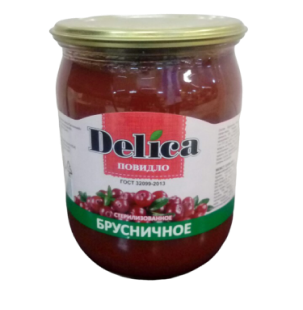

Другие вкусы
Повидло "Брусничное"
Брусничное повидло получается в результате уваривания ягод в сахаре. Плоды перетираются в пюре и лишь после этого начинают вариться. Для приготовления повидла смешивается брусничное пюре, сахар, вода и яблочный пектин. Последний ингредиент способствует получению консистенции густого желе.
Состав: Брусника, изомальт, вода питьевая, пектин яблочный, сок лимона, стевия
Срок годности: 12 месяцов
Тип упаковки: Стекло/барабан/ведро
Стандарты: Ту 91345-32123-12223-003
Пищевая ценность на 100г: белки 0г , жиры 0г, углеводы 68г